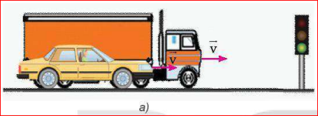
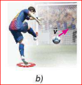
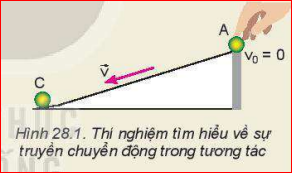

Hình a: Hai xe chạy cùng vận tốcCâu hỏi 1: Xe tải và xe con đang chạy cạnh nhau với cùng vận tốc. Khi đèn tín hiệu màu đỏ bật sáng, xe nào muốn dừng lại thì cần phải có một lực hãm lớn hơn? Tại sao?

Hình b: Thủ môn bắt bóng sút phạtCâu hỏi 2: Cầu thủ đá bóng sút phạt 11 m. Thủ môn khó bắt bóng hơn khi bóng bay tới có tốc độ lớn hay nhỏ? Tại sao?
Chuẩn bị: Ba viên bi A, B, C (chọn bi B nặng hơn A và C); Máng trượt; Vật kê tạo độ dốc.

Hình 28.1. Thí nghiệm truyền chuyển độngThí nghiệm 1: Thả lần lượt A, B (B nặng hơn A) trên cùng một độ dốc. Đo quãng đường dịch chuyển của viên bi C sau va chạm.
Thí nghiệm 2: Chỉ thả viên bi A nhưng thay đổi tăng dần độ dốc của máng trượt (làm tăng vận tốc va chạm). Đo quãng đường di chuyển của C.
❓ Thảo luận thí nghiệm:
1. Trong thí nghiệm 1, vận tốc hai viên bi A và B khi đến chân dốc có giống nhau không? Viên bi nào đẩy viên bi C lăn xa hơn? Tại sao?
2. Trong thí nghiệm 2, ứng với độ dốc nào thì viên bi A có vận tốc lớn hơn khi va chạm với bi C? Trường hợp nào bi C lăn xa hơn? Tại sao?
Trả lời 1: Vận tốc của bi A và bi B ở chân dốc xấp xỉ như nhau (vì thả cùng một độ dốc và bỏ qua ma sát). Viên bi B (nặng hơn) đẩy viên bi C đi xa hơn vì khối lượng của bi B lớn hơn nên khả năng truyền chuyển động của nó mạnh hơn.
Trả lời 2: Độ dốc càng lớn thì vận tốc của bi A khi va chạm với bi C càng lớn. Ở trường hợp độ dốc lớn hơn, viên bi C sẽ lăn xa hơn vì vận tốc va chạm của bi A lớn hơn dẫn đến khả năng truyền chuyển động mạnh hơn.
Từ hai thí nghiệm trên, ta thấy vật có khối lượng và vận tốc càng lớn thì sự truyền chuyển động trong tương tác với các vật khác càng mạnh. Đại lượng đặc trưng cho khả năng truyền chuyển động của một vật được gọi là động lượng của vật.
Động lượng của một vật khối lượng \( m \) đang chuyển động với vận tốc \( \vec{v} \) là đại lượng được xác định bởi công thức:
❓ CH_I.1: Tìm thêm ví dụ minh hoạ cho ý nghĩa vật lí của động lượng.
❓ CH_I.2: Trả lời câu hỏi ở đầu bài dựa vào khái niệm động lượng:
a) Động lượng của xe tải hay ô tô trong hình lớn hơn?
b) Tại sao thủ môn khó bắt bóng hơn nếu bóng có động lượng tăng?
a) Vì xe tải và ô tô con chuyển động với cùng vận tốc \( v \), nhưng khối lượng xe tải lớn hơn rất nhiều so với ô tô con (\( m_{\text{tải}} > m_{\text{con}} \)), nên động lượng của xe tải lớn hơn động lượng của ô tô con.
b) Khi quả bóng có động lượng tăng (do vận tốc tăng), khả năng truyền chuyển động và lực tác dụng của nó khi va chạm vào tay thủ môn sẽ lớn hơn rất nhiều, làm quả bóng dễ bị nảy ra xa hoặc làm đau tay, khiến việc bắt dính bóng trở nên rất khó khăn.
❓ Câu hỏi bài tập trắc nghiệm nhanh:
Phát biểu nào sau đây không đúng khi nói về động lượng?
A. Động lượng của một vật đặc trưng cho trạng thái chuyển động của vật đó.
B. Động lượng là đại lượng vectơ.
C. Động lượng có đơn vị là \( \text{kg}\cdot\text{m/s} \).
D. Động lượng của một vật chỉ phụ thuộc vào vận tốc của vật đó.
❓ Tính độ lớn động lượng trong các trường hợp sau:
Trường hợp a:
Đổi đơn vị: \( m = 3 \text{ tấn} = 3000 \text{ kg} \); \( v = 72 \text{ km/h} = \frac{72}{3,6} = 20 \text{ m/s} \).Trường hợp b:
Đổi đơn vị: \( m = 500 \text{ g} = 0,5 \text{ kg} \); \( v = 10 \text{ m/s} \).Trường hợp c:
Vật có \( m = 9,1 \cdot 10^{-31} \text{ kg} \); \( v = 2 \cdot 10^7 \text{ m/s} \).Khi ta đá một quả bóng, đánh một quả bóng gôn hoặc một viên bi va chạm vào thành bàn, tương tác sinh ra một lực rất lớn diễn ra trong khoảng thời gian vô cùng ngắn.
Khi một lực \( \vec{F} \) không đổi tác dụng lên một vật trong một khoảng thời gian \( \Delta t \), tích \( \vec{F} \cdot \Delta t \) được định nghĩa là xung lượng của lực trong khoảng thời gian đó.
Đơn vị đo xung lượng của lực là: N.s (Ni-utơn giây).
❓ Hoạt động tìm hiểu hiện tượng thực tế:
1. Trong các ví dụ dưới đây, các vật chịu tác dụng của lực nào trong thời gian rất ngắn?
2. Tại sao lực tác dụng trong thời gian ngắn như vậy lại gây ra biến đổi đáng kể trạng thái chuyển động của vật?
Trả lời 1:
Trả lời 2: Tuy thời gian va chạm \( \Delta t \) rất nhỏ nhưng lực va chạm \( F \) là cực kỳ lớn. Do đó tích \( F \cdot \Delta t \) (xung lượng) có giá trị lớn đáng kể, làm thay đổi vận tốc của vật một cách tức thời và rõ rệt.
Xét vật khối lượng \( m \) chịu lực tác dụng \( \vec{F} \) không đổi làm vận tốc biến thiên từ \( \vec{v}_1 \) sang \( \vec{v}_2 \) trong thời gian \( \Delta t \). Gia tốc của vật: \[ \vec{a} = \frac{\vec{v}_2 - \vec{v}_1}{\Delta t} \] Theo định luật II Newton: \[ \vec{F} = m \cdot \vec{a} = m \cdot \frac{\vec{v}_2 - \vec{v}_1}{\Delta t} \] Biến đổi hệ thức ta có:
"Xung lượng của lực tác dụng lên vật trong một khoảng thời gian bằng độ biến thiên động lượng của vật trong khoảng thời gian đó."
❓ Câu hỏi 1: Một quả bóng khối lượng \( m \) đang bay ngang với tốc độ \( v \) thì đập vuông góc vào một bức tường và bật trở lại với cùng tốc độ. Xung lượng của lực tác dụng lên quả bóng là bao nhiêu?
Chọn chiều dương là chiều bật ra của quả bóng từ tường.
Vì xung lượng bằng độ biến thiên động lượng nên độ lớn xung lượng của lực là \( 2 \cdot m \cdot v \). (Đáp án chọn đúng là C. 2mv).
❓ Câu hỏi 2: Tại sao khi bắt bóng, thủ môn phải co tay lại và lùi người một chút theo hướng quả bóng bay?
Khi thủ môn bắt bóng, động lượng quả bóng biến thiên từ giá trị ban đầu về 0. Từ công thức:
\[ F = \frac{\Delta p}{\Delta t} \]Nếu thủ môn chủ động co tay lại và lùi người theo hướng bóng, thời gian va chạm tương tác \( \Delta t \) giữa tay và bóng sẽ tăng lên. Khi độ biến thiên động lượng \( \Delta p \) không đổi, việc tăng \( \Delta t \) sẽ làm giảm đáng kể cường độ lực tác dụng \( F \) lên tay, giúp thủ môn không bị đau tay và bắt dính bóng chắc chắn hơn.
Chọn đáp án: D. làm giảm cường độ của lực quả bóng tác dụng lên tay.
Từ biểu thức liên hệ xung lượng, ta có thể viết lại định luật II Newton dưới dạng:
"Lực tổng hợp tác dụng lên một vật bằng tốc độ thay đổi động lượng của vật đó."
Đây là cách phát biểu có tính khái quát cao hơn vì nó áp dụng được cho cả các trường hợp khối lượng của vật thay đổi theo thời gian (ví dụ chuyển động của tên lửa).
Điều chỉnh khối lượng và vận tốc của xe để xem giá trị động lượng \( p = m \cdot v \) thay đổi trực quan ra sao.
1. Tính động lượng của Trái Đất:
2. Tính động lượng hệ tên lửa và khí:
Giải:
Xe 1 (xe tải):
Xe 2 (ô tô):
Kết luận: Động lượng của xe tải có độ lớn lớn hơn động lượng của ô tô con (\( 15000 > 11250 \)). Hai vectơ động lượng ngược chiều nhau.
Giải:
Tóm tắt đề bài:
1. Độ biến thiên động lượng (bằng độ lớn xung lượng của lực):
\[ \Delta p = p_2 - p_1 = m \cdot v_2 - m \cdot v_1 = 0,046 \cdot 70 - 0 = 3,22 \text{ kg}\cdot\text{m/s} \]Vậy xung lượng của lực tác dụng lên quả bóng có độ lớn là: \( 3,22 \text{ N}\cdot\text{s} \).
2. Lực tác dụng trung bình lên quả bóng:
\[ F = \frac{\Delta p}{\Delta t} = \frac{3,22}{0,5 \cdot 10^{-3}} = 6440 \text{ N} \]Nhận xét: Lực tác dụng trung bình lên quả bóng lên tới 6440 N (cực kỳ lớn) trong thời gian siêu ngắn, do đó bóng biến đổi trạng thái chuyển động bay đi cực nhanh.
Giải:
a) Tính động lượng mỗi vật:
b) Vật nào khó dừng lại hơn?
Vật có động lượng lớn hơn sẽ có xu hướng bảo toàn trạng thái chuyển động mạnh hơn, khó bị dừng lại hơn khi chịu lực hãm cùng độ lớn.
Vì \( p_2 > p_1 \) (\( 4 \text{ kg}\cdot\text{m/s} > 3 \text{ kg}\cdot\text{m/s} \)), nên vật thứ 2 khó dừng lại hơn.